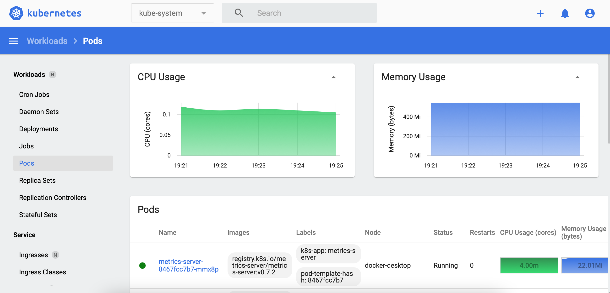

See these pages for more details about Kubernetes Metrics Server:
https://github.com/kubernetes-sigs/metrics-server
-
Deploying the Kubernetes Metrics Server:
$ kubectl apply -f https://github.com/kubernetes-sigs/metrics-server/releases/latest/download/components.yaml
serviceaccount/metrics-server created
clusterrole.rbac.authorization.k8s.io/system:aggregated-metrics-reader created
clusterrole.rbac.authorization.k8s.io/system:metrics-server created
rolebinding.rbac.authorization.k8s.io/metrics-server-auth-reader created
clusterrolebinding.rbac.authorization.k8s.io/metrics-server:system:auth-delegator created
clusterrolebinding.rbac.authorization.k8s.io/system:metrics-server created
service/metrics-server created
deployment.apps/metrics-server created
apiservice.apiregistration.k8s.io/v1beta1.metrics.k8s.io created
-
Check the Metrics Server Pod:
$ kubectl get pods -n kube-system | grep metrics-server
metrics-server-6f7dd4c4c4-5fv57 0/1 Running 0 68s
You might notice that the Pod is not starting because of the following error:
$ kubectl logs -f metrics-server-6f7dd4c4c4-5fv57 -n kube-system
"Failed to scrape node" err="Get \"https://192.168.65.4:10250/stats/summary?only_cpu_and_memory=true\": x509: cannot validate certificate for 192.168.65.4 because it doesn't contain any IP SANs" node="docker-desktop"
To fix that error, run the following command:
$ kubectl patch deployment metrics-server -n kube-system --type 'json' -p '[{"op": "add", "path": "/spec/template/spec/containers/0/args/-", "value": "--kubelet-insecure-tls"}]'
deployment.apps/metrics-server patched
-
Use Kubernetes Dashboard to visualize metrics:

To delete Kubernetes Metrics Server:
$ kubectl delete -f https://github.com/kubernetes-sigs/metrics-server/releases/latest/download/components.yaml
serviceaccount "metrics-server" deleted
clusterrole.rbac.authorization.k8s.io "system:aggregated-metrics-reader" deleted
clusterrole.rbac.authorization.k8s.io "system:metrics-server" deleted
rolebinding.rbac.authorization.k8s.io "metrics-server-auth-reader" deleted
clusterrolebinding.rbac.authorization.k8s.io "metrics-server:system:auth-delegator" deleted
clusterrolebinding.rbac.authorization.k8s.io "system:metrics-server" deleted
service "metrics-server" deleted
deployment.apps "metrics-server" deleted
apiservice.apiregistration.k8s.io "v1beta1.metrics.k8s.io" deleted